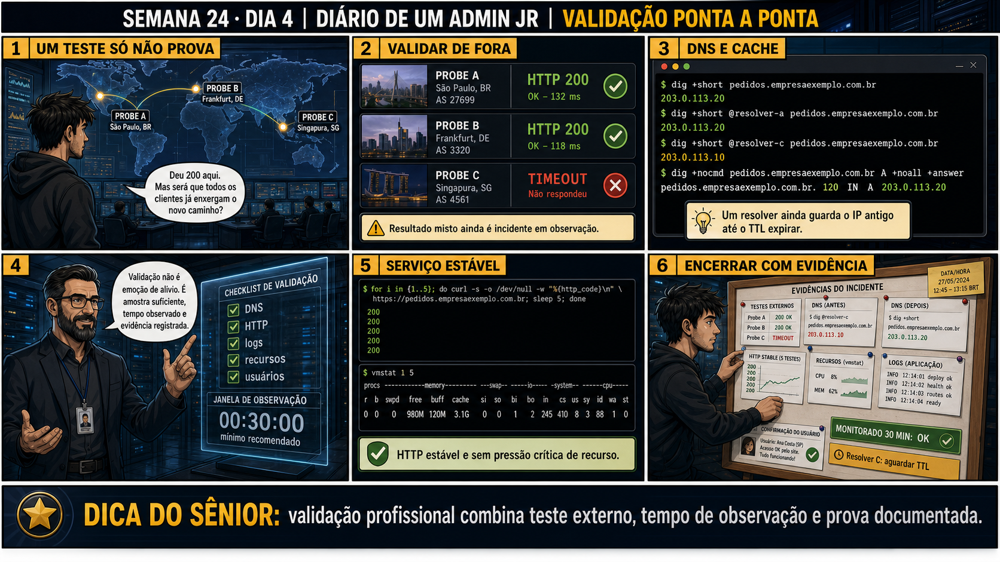

Semana 24 · Dia 4 — Missão Final Júnior | Fecha a Fase 2
Validação Ponta a Ponta
cada camada passar no próprio teste não garante que o caminho inteiro, de ponta a ponta, funciona
ANTES DE ALTERAR, OBSERVE. DEPOIS DE ALTERAR, VALIDE.
1. O teste que realmente importa
Você testa nc -zv 203.0.113.10 443 do seu notebook, fora da rede — funciona. Mas pede pra
um parceiro real testar pela VPN dele, do jeito que ele usa todo dia. O parceiro reporta: "a VPN conecta
normalmente, mas ainda não alcanço o servidor novo." O
AllowedIPs
tem duas pontas — e você só corrigiu uma delas.
💡 Passa o mouse nas palavras destacadas pra ver uma dica rápida — clica se quiser a explicação completa com analogia.
2. Antes de ver as opções — tenta responder
🧠 Recall ativo: lembra da Semana 18, Dia 4 — "AllowedIPs é rota e filtro"? No Dia 3 desta semana,
você editou o AllowedIPs do lado do SERVIDOR. Qual das duas funções (rota ou filtro) isso corrigiu, e
qual ainda falta?
No lado do servidor, o AllowedIPs pro peer do parceiro funciona como FILTRO: define de quais IPs de
origem o servidor aceita tráfego vindo daquele peer. Corrigir isso no Dia 3 já garantia que o servidor
aceitaria tráfego da nova subnet, se ele chegasse. Mas falta o lado do PARCEIRO: no computador dele, o
AllowedIPs pro peer do servidor funciona como ROTA — decide quais destinos são enviados PELO túnel. Se
o AllowedIPs do lado do parceiro ainda só lista a subnet antiga, o tráfego dele pro servidor novo nunca
nem entra no túnel — sai pela rota normal da internet dele, sem nunca alcançar o destino certo.
3. Questão comentada — clica numa alternativa
Qual ação resolve definitivamente o acesso do parceiro real via VPN à nova
subnet do servidor?
💡 Analogia do Sênior para Fixar: O princípio fundamental de 04 VALIDACAO PONTA A PONTA é como o alicerce de sustentação de um viaduto: garante que a estrutura de comunicação suporte alto tráfego sem colapsar.
4. Decodificador de conceitos
Clica em qualquer termo pra ver a definição completa e uma analogia do dia a dia:
5. Ferramentas e leitura da evidência
| Teste | Resultado | Conclusão |
|---|---|---|
| nc -zv externo direto | Sucesso | Trunk + NAT (Dia 3) confirmados corretos |
| VPN do parceiro real | Conecta, mas não alcança | Falta rota do lado do cliente |
--- do lado do servidor (já corrigido no Dia 3) --- [Peer] PublicKey = parceiro_pubkey AllowedIPs = 10.20.10.0/24, 10.20.30.0/24 ← filtro: aceita as duas subnets --- do lado do parceiro (AINDA NÃO corrigido) --- [Peer] PublicKey = servidor_pubkey Endpoint = 203.0.113.10:51820 AllowedIPs = 10.20.10.0/24 ← rota: só a subnet ANTIGA $ ping 10.20.30.50 # do computador do parceiro, pela VPN Request timeout ← tráfego nem entra no túnel, rota não existe pra esse destino --- correção: AllowedIPs do lado do parceiro --- [Peer] PublicKey = servidor_pubkey Endpoint = 203.0.113.10:51820 AllowedIPs = 10.20.10.0/24, 10.20.30.0/24 ← corrigido, agora inclui a rota nova $ ping 10.20.30.50 # testando de novo 64 bytes from 10.20.30.50: icmp_seq=1 ttl=63 time=12.4 ms ✅ funcionando
5.1 O painel 4 da prancha de hoje mostra o júnior, no Dia 3, tendo testado só do PRÓPRIO notebook, e considerado o incidente resolvido sem envolver nenhum parceiro real no teste
Testar do próprio notebook parecia suficiente, já que o resultado foi positivo.
Por que testar só do seu próprio notebook, mesmo com resultado positivo, não é
suficiente pra considerar um incidente de acesso de terceiros como totalmente resolvido?
💡 Analogia do Sênior para Fixar: Diagnosticar anomalias em 04 VALIDACAO PONTA A PONTA é como o eletricista usando o multímetro no quadro de disjuntores: mede a passagem de sinal no ponto exato da falha.
5.2 "Se o servidor já aceita a subnet nova (AllowedIPs corrigido no Dia 3), por que o cliente precisa de configuração própria também?"
Um colega acha redundante o cliente também precisar de AllowedIPs correto, já que o servidor "já aceita".
Por que o servidor aceitar tráfego de uma subnet (filtro) não é suficiente pra
garantir que o cliente vai efetivamente enviar tráfego pra lá (rota)?
💡 Analogia do Sênior para Fixar: Aplicar as boas práticas de 04 VALIDACAO PONTA A PONTA é como o protocolo de segurança da aviação: elimina pontos únicos de falha e garante previsibilidade operacional.
6. Procedimento profissional
- Depois de corrigir e validar cada camada individualmente, sempre teste ponta a ponta.
- Teste exatamente pelo caminho que o usuário final real usa, não pelo caminho mais conveniente pra você.
- Em configurações com duas pontas (como VPN), lembre que cada lado tem sua própria configuração independente.
- Envolva um usuário real no teste final sempre que possível, não só simulações do seu próprio ambiente.
- Só declare o incidente resolvido depois da validação ponta a ponta bem-sucedida, não antes.
7. Laboratório guiado — marca conforme for testando
Segurança: execute os testes apenas em VMs descartáveis e confirme nomes de discos, hosts e arquivos antes de cada comando.
- Simule o parceiro com uma segunda VM cliente WireGuard, ainda com o AllowedIPs antigo do lado dela.Resultado esperado: VPN conecta (handshake ok), mas ping pra nova subnet falha.
- Atualize o AllowedIPs do lado dessa VM cliente, incluindo a nova subnet.Resultado esperado: ping bem-sucedido pela VPN até o servidor novo.🧑🏫 Aqui entra o Mentor (em breve): se você esquecer qual lado precisa de qual tipo de AllowedIPs, este é o ponto onde o chat com o Sênior-IA vai te lembrar da distinção rota/filtro da Semana 18.
- Documente essa última correção, deixando claro que ela era do lado do cliente, distinta da correção do Dia 3.Resultado esperado: registro completo diferenciando as correções de servidor e de cliente.
8. Validação e encerramento
- AllowedIPs do lado do parceiro (rota) corrigido, complementando o do servidor (filtro) já corrigido no Dia 3.
- Teste ponta a ponta confirma o caminho real do usuário final, não só um caminho conveniente de testar.
- Configurações de duas pontas (como VPN) exigem correção e validação dos dois lados, não só um.
- O incidente só pode ser considerado resolvido depois da validação ponta a ponta, não antes.
Rollback e limites
A correção do AllowedIPs do parceiro depende de coordenação com alguém fora da
empresa — diferente das correções do Dia 3, que estavam totalmente sob seu controle. Isso reforça a
importância de comunicação clara: o parceiro precisa saber exatamente o que mudar na configuração dele, com
instruções específicas, não um pedido vago de "atualize sua VPN".
💡 Sobre repetição espaçada: este dia conecta diretamente com a Semana 18,
Dia 4 — "AllowedIPs é rota e filtro" foi ensinado ali como um conceito isolado, e hoje você viu o custo real
de esquecer metade dessa dualidade num incidente de verdade. O Anki vai reforçar essa conexão específica.
9. Resposta final
Alternativa correta: A. Nesta aula, a correção final foi atualizar o
AllowedIPs do lado do parceiro, complementando a correção do servidor já feita no Dia 3. O ponto central do
caso é este: cada camada passar no próprio teste não garante que o caminho inteiro, de ponta a ponta,
funciona.
🔓 O que você desbloqueou hoje
Capacidade de validar um incidente resolvido testando o caminho real do
usuário final, não um atalho conveniente. Amanhã fecha a missão — e a Fase 2 inteira — com o relatório final
do incidente.